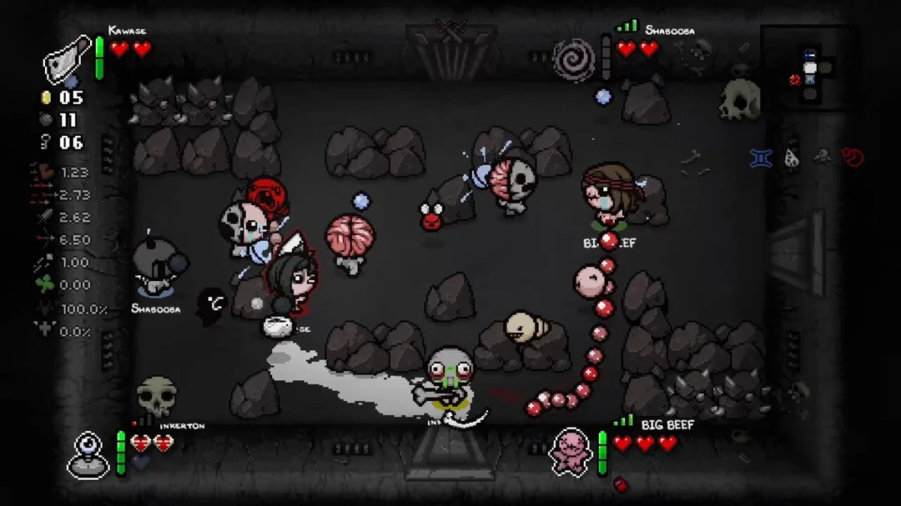
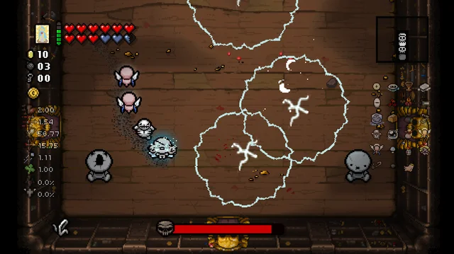

Welcome to The Binding of Isaac Fan Page!
The Binding of Isaac is a roguelike dungeon crawler that tells the dark, surreal story of Isaac, a young boy trying to escape from his mother. Explore randomly generated dungeons, face bizarre monsters, and uncover secrets in this critically acclaimed indie game.
This is a screenshot of a multiplayer game mode where multiple people beat the game at the same time.
About the Game
The Binding of Isaac was developed by Edmund McMillen and Tommy Refenes of Team Meat. It combines elements of action, roguelike, and bullet hell genres. Players control Isaac as he journeys through his mother's basement, battling monsters and collecting items that enhance his abilities.
Here is an image of me enjoying the game in my free time!